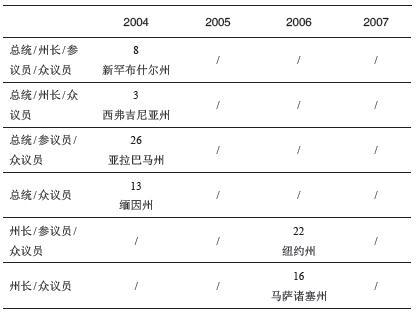
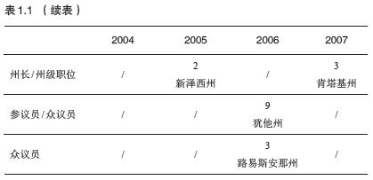
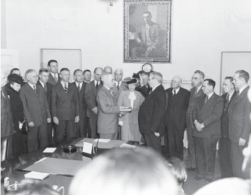
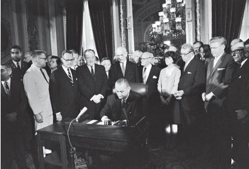

美国人为他们的民主选举体系感到自豪——鉴于这一体系由来已久，他们的自豪感颇有道理。但说实话，只有少数美国人和为数更少的外国观察者才能弄明白美国的选举流程。生活在民主国家的大多数民众都会依据本国标准来评判其他民主国家。但是，代表制民主政体有许多种。各种民主体系的共同点在于，由民众投票选出政府官员。在一些国家，民众选出行政、立法和司法机构的各类官员；在另一些国家，民众只选出其中一部分。在一些国家，投票者选出国家、地区和地方各级人员；在另一些国家，投票者只选出其中一部分。关键在于，民众有资格评判政府官员的表现，后者的决定往往直接影响到民众的生活。
我们可以根据若干要素来评判世界范围内的民主政体。比如，选举流程是否公开？在野的候选人是否有机会当选？在加拿大，掌权的政党频繁更替。在前苏联，这样的权力变更无法想象。
民众能否以轻松、自由的方式参与政治过程？在丹麦和德国，立法机构选举通常能吸引将近90%的选民；在波兰和瑞士，将近55%；在近来的美国选举中，只有约33%的选民参加中期选举，约50%的选民参加总统大选。
在民众做出投票决定之前，他们能掌握多少信息？在多大程度上，候选人及其政党可以就现实问题自由发表看法？各种民主政体之间存在显著差异，主要表现在新闻媒体和反对者在多大程度上可以自由批评执政者，特别是选举流程的公开程度、在野候选人当选的可能性、民众的参与度、民众在做出判断的过程中所能获取的信息、候选人自由表达观点的权利以及民众自由投票的权利。
根据上述标准，美国的民主体系得分很高。在民众权利和选举流程方面，美国式民主堪称典范，但我们需要更高的标准。投票者和候选人必须能够利用这些流程，行使权利来影响政府决策，使其符合民众的公开偏好。
在本书中，我们将分析美国的选举制度通过哪些方式（常见的方式是投票）让被治理的民众认可负责治理的政府官员。我们也将分析，什么时候民众将不再支持（由此不再认可）现行政府的政策。许多民众热切关注政策走向，比如战争与和平，经济繁荣，关爱穷人、病患和老人，各种宗教、种族、性别、性取向、残障人士的平等权利，环境保护，等等；这些民众会觉得选举流程令人厌烦。但吸引我的恰恰是选举流程。选举规则往往决定最终获胜者，从而也决定政策偏好。因此，要想弄明白选举结果和政策走向，首先要弄清楚选举流程中的具体细节。
要分析美国式民主，我们首先要讨论美国的宪法框架，这不仅关系到选举流程，而且也涉及选举的某些关键方面。我们将逐一分析，看美国政治体制的各个基本要素是否有助于民众行使权利，认可政府施行的政策。一些熟悉的概念（比如三权分立和联邦制）有助于解释美国如何通过特有的方式解决民主认可的难题；鉴于这些概念的重要意义，我们有必要先来回顾这些概念。
美国式民主的两大基本特征是三权分立（由宪法规定的制衡原则）和联邦制。尽管有些国家也具备这些特点，但它们在美国宪法框架内的运作方式独一无二。要想理解美国的政治体系，就必须先明白这两点对于政治活动和国家治理的重要性。
三权分立指的是行政、立法和司法权力分属于不同机构。如果某人在行政部门任职，他或她就不能在立法或司法机构再担任职务。在国家层面，这条规则有两个小小的例外。美国副总统（作为行政部门经由选举产生的官员）兼任参议院议长。他唯一的职责就是主持参议院会议。此外，遇到票数持平的情况，他将投出决定票。在极少数情况下，如果参议院要作为法庭对总统进行弹劾，则由美国首席大法官来主持。在美国历史上，这样的情况仅发生过两次。
在施行三权分立的政府中，行政长官的选举独立于立法机构。在美国，不但这些官员经由不同的选举产生，而且宪法规定的任期各不相同——总统任期四年，众议员两年，参议员六年——这样的安排确保他们由不同的选民群体选举产生。三权分立体系不同于议会体系，后者以英国为例，首相是议会成员，并且由其他议员选举产生。
美国是采取联邦制的共和国，整个国家按地理位置分为若干部分，各自享有相应权力。宪法规定并限制美国政府的权力。宪法第十修正案规定：“宪法未授予合众国同时也未禁止各州行使的权力，由各州或人民自行处置。”美国各州自行选举产生政府，同样施行三权分立。由于州宪法的差异，各州的政治制度不尽相同。
三权分立的联邦制意味着，民众很难通过选举或通过解读选举来表达自己的观点。如果民众对于某个议员的工作感到满意，但对于整个国会的表现感到不满，他们是否应该投票让该议员继任？如果民众认为，政府的政策正在引导国家朝着错误的方向前进，并且总统和国会正在为政府走向争论不休，他们怎样通过投票的方式，有效表达自己对于未来政策的不认可？谁是他们反对的对象？总统，还是国会？还是说，是因为总统和国会未能达成一致？
在美国联邦体系的大多数选举中，民众同时选出联邦政府和州政府的官员。如果民众认为，由于联邦层面的决策因素，州政府没有达到他们的预期，他们该如何表达此类观点？因为权力由联邦政府和州政府分享，又因为政府的任何部门都不能凌驾于其他部门之上，所以政府很难将民众意愿转化为相应政策，哪怕他们很清楚民众的偏好。同样，民众也很难找到责备的对象，因为没有任何官员应该为政策结果承担全部责任。
首先，美国人要选出超过50万名政府官员，这一数字远超出其他民主政体。我们要分别选出行政部门和立法部门的官员，某些时候还包括法官（各州规定不同），涉及联邦、州和地方三个层面。我们同时选出其中的大部分人选。比如，2004年11月7日，北卡罗来纳州夏洛特市举行民众投票，选举总统和副总统、联邦参议员、联邦众议员、州长和副州长、其他七名州级行政官员、五名州法官和若干名地方法官、州参议员、州众议员以及一大批县级或地方官员。所谓的“长选票”源于19世纪，原本是拓展民主的一种方式，但现在有人认为，我们的选举体系已经把好事变成了坏事。
总统职位是整个体系中最大的“奖项”，所以四年一度的总统选举影响力远超其他选举。结果就是，民众把注意力都放在总统选举上，忽视了“选票下方”的其他选举。部分民众只参与选票上方的选举，把下方的其他职位空在那里。这一现象被称为“弃选”，在选票特别长的时候，弃选比例甚至超过25%。
竞选次要职位的候选人想方设法吸引选民的注意力。有一种竞选策略就是利用那些在选票上位置高于你的候选人，借助他们的声望和魅力来赢得竞选。2004年，许多共和党候选人察觉到，布什总统在选民中很受欢迎，于是积极邀请总统访问他们的选区，借此让选民注意到陪同总统出现的他们。采用长选票的结果就是，位于选票下方的职位选举结果并不准确，很难确定投票的民众是否认可当选官员所施行的相关政策。位于长选票底部的选举结果很少取决于候选人的观点和履历；真正起作用的往往是那些在民主理论看来相对次要的因素，比如候选人的名气、族裔、家庭住所（与投票者的地域关联）和政党归属。
三权分立的联邦制造成的第二个影响就是，各种选票长短不一。事实上，有些选票非常短。因为联邦议员的任职周期不同于总统，所以一部分议员的选举与总统选举同时进行，另一部分则分开进行。因为50个州有不同的治理结构，各自制定规则，所以一部分州长和州议会的选举与总统选举同时进行，另一部分则分开进行；在不举行总统选举的年份里，一部分州级选举与国会选举同时进行，另一部分则分开进行。
哪些职位与其他职位同时举行选举，这非常重要。近年来，许多州修订了法律，规定在举行总统选举的年份，这些州的州级职位不再出现在选票上。人们希望此类做法有助于民众表达他们对于候选官员执政表现的看法。应该是各州层面的问题（而不是全国性问题）成为当地政治讨论的焦点。然而，即便是在推行改革后的选举中，除了在奇数年举行选举的五个州，其他州的民众依然在同一次选举中既选出州级官员，同时也选出联邦议员。
表1.1 位于选票顶部的职位


表1.1列出了选民可能面对的各种选举，并提供相应实例。在非大选年（即不举行总统选举的年份）举行的选举，选民投票率通常只有大选年的75%。人们最关注的是位于选票最上方的州长竞选。只有在更为重要的职位另行选举的情况下，参议员和众议员选举才会引起重视。在联邦选举不出现在同一张选票上的情况下，所有州级选举都会成为首要话题。
表1.1可以扩展，将地方选举也包括在内。在一些社区，地方选举独立于联邦和州级选举，因此选民对于地方事务可以给予足够关注。然而，虽然民众在此类选举中拿到的是短选票，但他们必须频繁前往投票点，因此投票率反而下降。以路易斯安那州的巴吞鲁日为例，2003至2004年的两年时间，由于联邦、州、地方三级选举分别举行，当地人必须先后11次前往投票点参加选举。
民众享有表达观点的权利，但由于选举过于频繁，许多人选择放弃投票权。因此，频繁选举并不能帮助民众有效表达他们的看法。
此外，精于算计的政治人物在决定参选之前，都会仔细考虑特定选举中可供选择的职位。比如，在竞选参议员时，如果同一年你所在的州不举行州长选举，那么募集资金就会相对容易一些，因为州长候选人势必分流一部分资金。这样的决定显然与有效的民主制度无关。
涉及竞选活动的美国宪法条款还造成另一个结果，那就是美国各级政府所有职位的任职期限都是固定的，也正是这一点将美国的选举体系与其他国家区分开来。在面临危机时，美国政府即便应对不当，也不会因此垮台。只有当政府任满换届时，选民才有机会表达他们的看法。以联邦职位为例，不管世界局势如何变化，选举日固定在偶数年11月第一个星期一之后的第一个星期二。总统任期四年。如果总统在任期内去世（或者像尼克松总统那样离职），继任者在剩余的任期内取代他的位子，但不举行新的选举，直到下一轮竞选周期来临。
1944年，富兰克林·罗斯福总统赢得连任；尽管当时正值二战，美国依然举行总统选举。1945年4月，罗斯福去世，默默无闻的副总统哈里·杜鲁门成为继任者，在战争和战后时期领导美国，直到1948年11月才面临选举。联邦众议员任期两年，联邦参议员任期六年。其间如果有人去世或离职，继任者将完成剩余任期，但选举周期不会改变。美国政府不会因为民众投不信任票就垮台，公众态度或世界局势不会影响选举的时间。
美国的选举体系还有一些美国民众习以为常的规定，有助于将民众意愿转化为政府决策。这些规定包括：通过选举人团来选出总统；通过以地理位置划分的单一席位选区来选出众议员；赢得选举并不需要超过半数，只要能获得相对多数票就可以。在许多人看来，改变上述规定中的任何一项意味着不够民主，但事实上，每一项规定都仅仅是实现有效代表制的一种手段，很少有人考虑过这些规定对于民主体制所产生的影响。

图1 1945年4月，罗斯福总统去世后，哈里·杜鲁门在白宫的内阁会议室宣誓就职，成为美国总统
2000年11月，美国人（乃至整个世界）强烈体会到选举人团制度对于总统及副总统选举所产生的影响。那一年的选举看起来难有定论，在投票结束后的几个月里，法庭一直在进行辩论，究竟是乔治·W.布什还是阿尔·戈尔赢得佛罗里达州的25张选举人票。虽然时任副总统的戈尔赢得的大众选票数超过时任州长的布什，但两人获得的选举人票都没有超过半数，佛罗里达州的25张选举人票将决定胜利归属。最终美国最高法庭判定，停止重新计票，将佛罗里达州的选举人票划归乔治·布什。选举的结果由此确定，布什将成为美国第43任总统。
政治观察者或许听说过选举人团制度，但他们对于这一制度的历史成因、运作机制，尤其是政治意义缺乏足够了解。其实这才是最重要的。人们一说到美国式民主，就会想到总统的选举方式，不管是赞同还是批评，都离不开这一点。要想评价美国式民主，就必须弄明白选举人团制度，因为美国选举的这一特性决定了候选人如何开展竞选活动、吸引哪些投票者，以及选举的结果在多大程度上准确反映了民众的看法。
简而言之，美国的开国元勋发明了选举人团制度，目的在于解决他们当时所面临的政治问题。制定宪法是一项错综复杂的工作。在起草1787年宪法时，最重要的一项约定就是所谓的“康涅狄格妥协”。该方案规定，众议员名额按照各州人口比例进行分配，参议员每州两名。这项约定解决了美国各州因人口规模不等而产生的利益冲突。众议员由民众投票产生，同时各州根据州议会在当时遵循的规范，自行决定如何选出参议员。
但是，如何选出总统？由各州共同决定？那些人口较多的州显然不同意这种做法。由民众投票产生？那些制定宪法的“民主人士”其实并没有那么民主；几乎没有人愿意将如此重大的决定交给大众。即使他们愿意这么做，奴隶是否也参加投票？蓄奴州希望在分配众议员名额时把奴隶人数计算在内，最终臭名昭著的五分之三妥协（即在按照人口比例换算议员名额时，每个奴隶相当于五分之三个自由人）解决了这一难题。不过，虽然这些奴隶增加了蓄奴州在众议院中的代表比重，但他们自身没有投票权。这是来自蓄奴州的开国元勋所能容忍的最大限度。
最终的妥协结果就是选举人团。这个制度距离纯粹的民主还隔了一层。每个州可以选出若干名选举人，具体数字等于众议员人数加上参议员人数（一直都是两人）。这是人口规模不等的各州达成的妥协。各州可自行决定如何选出这些选举人——这种做法将权力留给各州，同时也是为了回避奴隶这一难题。选举人不得在联邦政府内担任任何其他公职，从而确保选出可靠的、没有利益冲突的选举人。每个选举人投出两票，其中一票必须投给其他州的候选人，这是为了避免地方主义思想作祟。假如没有这一条款，很可能出现选票都投给本州候选人的情况。候选人需要获得过半数票才能当选总统，从而避免某几个州控制选举。如果没能获得过半数票，众议院就从票数最高的三名候选人中进行选择，但每个州此时只有一票，这同样是为了调和小州和大州之间的利益冲突。票数第二的候选人将成为副总统，一旦总统遭遇意外，就由副总统替补成为总统。
考虑到开国元勋的立场和他们所面临的政治难题，选举人团可谓是非常成功的发明。在不违背立宪过程中艰难达成的诸多妥协的情况下，这一制度确保选出一位受人尊重的国家领袖。参与这一过程的每个人都知道，乔治·华盛顿将通过这样的选举流程当选总统——这正是众人期盼的结果——也正因为如此，这一流程最终被采纳，并且大体上沿用至今。然而，很难说选举人团就一定有利于民主。这只是一群政治精英为了确保预定目标而达成的妥协。
我没有听过哪个人现在还把选举人团当作总统选举的理想方式。虽然每当有人试图放弃这一做法的时候，总有其他人站出来为之辩护，并且在近年来的所有讨论中，这些辩护意见总是占据上风。但没有人会说：“谢天谢地，开国元勋给我们留下了选举人团。这是我们能够拥有的最好的选举体系！”这样荒谬的话根本就说不出口。
但很少有人知道，选举人团究竟如何运作；因此也很少有人知道，该如何进行改革。自从宪法生效以来，选举人团的运作方式一直在演变发展。最重大的变化出现在作为竞选组织的政党诞生之后（参见第二章）。在最早的总统竞选中，不区分总统和副总统，所有候选人在一起竞争。然而，这样的做法在选举人团体系中行不通，结果造成1800年的选举没有人获得过半数票。为了修正这一缺陷，1804年通过的宪法第十二修正案规定，选举人分别选出总统和副总统。
第二次重大改革是，各州采取“胜者独占”的方法来分配选举人票。根据美国宪法，各州自行决定选举人的推选办法。到了1836年，得益于民主化改革，所有的州都在全州（而不是选区）范围内举行普选，选出该州的选举人。由于政党的影响力，各州为求实效，很自然地采取了“胜者独占”的做法。如果某个政党确信自己能在某个州获得胜利，那么该党自然有理由采取“胜者独占”的方式。一旦某个政党的支持者在该党占据优势的州采取这一做法，另一个政党的支持者就不得不跟进，在他们控制的州或者在因此失去选票的州同样采取这一做法。各州政党负责制定候选人名单，名单上潜在的选举人数目等于该州规定的名额；政党的支持者通常把票投给名单上的全部候选人，从而确保“胜者独占”的结果。
同样，在党派势力均衡的州，州议会意识到，如果提高获胜者的奖励——获胜者将得到该州全部的选举人票，而不仅仅是获胜者与失败者之间的票数差额——候选人将会在该州投入更多精力。于是，一旦某个州采用“胜者独占”模式，其他州也会被迫跟进。
如今，选举人团的“胜者独占”模式作为这一体系最富争议的部分，已经在美国全部50个州中的48个州以及哥伦比亚特区实施。每个州获得的选举人名额依旧等于众议员人数加上参议员人数。根据1961年通过的宪法第二十三修正案，哥伦比亚特区的民众享有投票权，并且特区的选举人名额与人口最少的州相等，也就是说，特区可以有三名选举人。这样的分配方式意味着，虽然人口较少的州获得的选举人名额很少，但按照人口比例换算，这些州反而从中得利。
在缅因州和内布拉斯加州以外的所有其他州，由普选产生的选举人（他们明确支持某位候选人）进行投票、以相对多数的方式获胜的候选人将赢得该州的全部选举人票。在上述这两个州，在每个议会选区以相对多数的方式获胜的候选人获得一票，在整个州获胜的候选人获得另外两票。自从这两个州的议会采取这种办法以来，在所有选区获胜的总是同一个候选人。因此，虽然这种办法不同于常规的投票流程，但并没有造成实际影响。
要选出总统和副总统，选举人团投票时必须出现过半数票。如果没有达到过半数票，总统就由众议院从得票数最高的三名候选人中选出，每个州可以投一票，得到过半数票的候选人获胜。在这种情况下，副总统由参议院选出。
美国采用选举人团体系来选出行政长官，这种做法虽然在民主国家中独一无二，但其重要性并不在于此。不过，在评价美国式民主的时候，这一遴选总统的体系有几点值得注意：
●除了根据人口换算的票数之外，每个州额外获得两票，因此每个民众的选票在最终结果中所产生的影响并不一致。
●由于选举人票采取“胜者独占”的做法，候选人如果确信自己在某些州必然获胜或必然失利，他们就不会在当地频繁开展竞选活动。结果就是，总统竞选活动在某些州热火朝天，在另一些州（包括人口最多的几个州）销声匿迹。
●因为各州的选举人分别进行投票，因此可能出现两名候选人获得几乎相同的民众投票数，但最终得到的选举人票截然不同的情况。某些候选人在全国范围内实力平平，但在某些州和地区处于绝对优势；另一些候选人在全国范围内与前者实力相当，但各州票数分配平均。选举人团制度显然更有利于前者。
●由于每个州获胜者与失利者之间的票数差并不影响最终结局，即获胜者赢得全部选举人票，因此有可能出现获得最多民众选票的候选人无法赢得选举的情况，比如2000年的阿尔·戈尔。
2000年，选举人团体系遭到猛烈抨击，因为最终结果非常接近，并且布什并没有得到过半数票。虽然面临这样的批评，但目前还缺乏足够的动力改用其他办法进行选举——比如缅因州和内布拉斯加州采取的选区制，这种制度根据候选人获得的实际选票来分配选举人名额；甚至采取更为激进的办法，由民众直接选出总统。因此，选举人团体系对于总统选举依然具有战略意义（参见第五章）。当然，如果人们认为，获得最多选票的候选人理应当选，这显然是出于民主的考量。
2000年，希拉里·罗德姆·克林顿移居纽约州并参加当地的联邦参议员竞选。有人批评她是个“用地毯打包的家伙”（投机分子）：这个词源自美国内战结束后的重建时期，指的是那些暂居南方的北方佬（用地毯把自己的财物裹在一起），他们没有定居的打算，只是出于经济利益，临时居住在南方。如果希拉里·克林顿想要成为参议员，她就必须在参选的那个州拥有住所。
联邦众议员和参议员必须在各自代表的州拥有住所。但宪法关于居住地的要求仅限于此。法律并不要求议员实际居住在他们所代表的选区，也不要求每个选区只有一名代表。同样法律也没有规定，只要获得相对多数票（即比第二名获得的票数至少多出一票）就足以赢得选举。但对于美国政治而言，这些规范十分重要——这些做法实质上决定了，谁有权参加众议员或参议员选举，以及谁能够获胜。可以说，如果没有这些限制，选举流程将更为准确地反映出民众的偏好，至少在国家层面的选举中是这样。
美国人认为，他们在立法机构中拥有“他们的”代表。也就是说，他们所在的选区中，将会有一名成员被挑选出来，作为他们的代表。虽然联邦法律规定，众议院必须采取这样的体系，但某些州以及许多地方社区都采取多席位选区的做法。为什么一种体系比另一种更好？有没有一种体系能实现更好的代表制？
回顾单一席位选区在美国的发展历史有助于思考这些问题。1787年制宪会议期间，开国元勋讨论了单一席位选区问题。詹姆斯·麦迪逊写了一系列为批准新宪法辩护的文章，其中一篇后来以“《联邦党人文集》第56篇”的名称发表，在这篇文章中麦迪逊提出，单一席位选区“将最大的州划分为十到十二个选区，从而确保该选区的代表了解……当地的利益需求”。重要的是，地方代表能够了解并维护地方利益。
在政党体系形成之后，单一席位选区显然能够更好地体现党派利益。某个政党可能在某个州的政治格局中占据主导地位，但另一个政党可能在某些地区具有优势。虽然如此，当1842年国会通过《议席重新分配法案》，要求施行单一席位选区时，当时有28个州在众议院内拥有超过一名以上的代表，其中有六个州依然使用大区选举制。在下一次选举时，这六个州中有四个州无视该法案——有人认为这一法案侵犯了美国宪法留给各州的权利——且没有受到任何惩罚。
国会此后每隔十年通过新的议席重新分配法案，大多数法案要求施行单一席位选区。1929年，国会通过一项法案，要求把议席重新分配方案永久固定下来；但仅过了三年，最高法院在“伍德诉布鲁姆案”的判决中便裁定，任何议席重新分配法案的有效期仅限于自该法案生效起的十年时间。大多数州继续施行单一席位选区，然而直到肯尼迪执政时期，依然有超过20名国会成员来自多席位选区。
1967年，国会通过一项新的法案，经林登·约翰逊总统签署生效，该法案禁止各州通过多席位选区的方式来选出代表。这一做法在过去曾盛行一时，但到该法案通过时，只有夏威夷州和新墨西哥州还在施行多席位选区。
这项新法案的推动力来自1965年通过的《选举权法》，后者将投票权授予更多的黑人，尤其是在南方各州。因为担心南方各州议会为了削弱黑人的投票权而施行多席位选区，国会专门通过此项法案。另外，某些国会成员担心，一旦州议会无力重新划分选区，法院将下令施行大区选举——这样的选举将危及他们在国会中的位置。如今，1967年通过的法案依然有效。

图2 1965年《选举权法》经林登·约翰逊总统签署生效
作为改进代表制的一种手段，重新划分选区的相关法案得以施行，以便于早期的代表了解选民，同时某些在全国范围内影响有限但在部分地区占据优势的少数党能够选出自己的代表，另外也确保刚获得投票权的黑人能发挥影响力。那么，这些理由现在还成立吗？
到了21世纪，国会选区平均居住人口达到近70万人。按照开国元勋的设想，划分的选区应该面积较小并且人口特征相近，从而确保选出的代表能够了解当地居民的利益。但现在许多选区的人口在种族、族裔、社会经济和宗教等多个方面明显呈现多元化，对于重大问题的看法也不尽相同。建国初期之所以按照地理位置划分选区，是因为当时长途旅行非常困难。现在有了航空业和电子通信技术，与选民的沟通并不需要面对面的直接接触。
施行单一席位选区的初始动机是为了以更加有效、公正的方式来代表政党利益，但现在那些负责划分选区的人在做出决定时，往往是为了公然限制竞争，确保实现本党想要的结果。一直以来都有人向最高法院提起诉讼，声称自己的平等代表权受到侵犯，并且对为了政党利益重新划分选区的不公正做法提出挑战。但最高法院并没有明令禁止不公正划分，哪怕许多人认为正是这种做法造成国会选举（至少在某些人口众多的州）缺乏竞争。
施行单一席位选区以便提高黑人投票者的影响力，这被视为40年前颁布的《选举权法》的重要目标，如今这一看法也遭受质疑。种族多元化的趋势在大多数选区日益明显，同时人口的流动性给预测选区的人口结构带来困难，两者都使单一席位选区或许已经不再是实现上述目标的有效手段。
但规范依然在延续。即使是在通过多席位选区选出州议员或市议员的那些州，当地居民也坚持认为，国会成员应该代表选出他们的地区，并且维护当地利益。我们是不是应该重新审视“按照地理位置划分的单一席位选区”这个概念？有些人认为或想证明，美国式民主的这根“支柱”事实上不利于实现公平的代表制、具有竞争性的选举并最终改善民主。但这种说法遭到其他人的反驳，后者认为，单一席位选区作为选举法案中后来增设的条款，对于美国式民主来说至关重要。
美国人信任多数法则。不过大多数情况下，竞选都是通过获得相对多数票的方式（而不是过半数票）来决出胜负。如果采用真正的过半数票法则，那么许多选举的结果就要改写。因此，有必要追问，改用过半数票法则是否能实现更为有效的代表制。
我们已经注意到，虽然选举人团体系采取过半数票法则，乔治·W.布什还是在民众投票数少于竞争对手阿尔·戈尔的情况下，当选美国总统。在美国的选举中，没有获得过半数票却最终赢得选举的情况很常见，较为罕见的情况是，失利者获得相对多数票，却没有得到决胜选举的机会。虽然两大政党垄断美国政坛，但每个选举年都有一些获胜者票数不足一半——少数党或无党派候选人获得的选票足以维持力量均衡。在初选中，这一现象更为明显，因为作为党内推举的初选往往有两名以上候选人竞争提名。
当前的选举制度采取的是“相对多数票获胜”的办法，也就是说，票数最高的人获胜，不管他得到的票数是否超过半数。这种办法明显不够民主，但要改变这种做法会让许多美国人感到奇怪。作为替代，有两种办法（每种都有不同的变化形式）经常被提到。
在南方各州和某些其他地方，如果没有人在选举中获得过半数票，就会举行决胜选举。（某些地方规定，如果没有人获得“绝对多数票”，即在第一轮竞选中获得超过40%的选票，就会举行决胜选举。）这种办法在初选中更常见，普选中用得较少。之所以使用这种办法，其中一个原因在于民主党多年来在南方各州的普选中占据优势，因此初选也就相当于普选。然而，实行决胜选举并非毫无问题。决胜选举的投票率通常远低于第一轮竞选，并且具有强烈意识形态偏向的组织往往占据主导地位，因为他们能够更为有效地动员选民。过往经验表明，少数党候选人在决胜选举中表现糟糕。另外，决胜选举代价高昂，参选的候选人和负责管理的司法机构都要承担高额开支。
近年来，改革者开始推行排序投票制。这个办法有多种变化形式，但最基本的理念是，在多个候选人参加的竞选中，民众在投票时加上自己的排序偏好，即第一顺位、第二顺位，依次类推。在投票结束后，如果没有人获得过半数票，先淘汰支持率最低的候选人，把他或她的选票重新分配给第二顺位的候选人，然后重新计算票数。如果有多名候选人参加竞选，这一步骤将一直重复，直到有人获得过半数票。
在体现民主方面，排序投票制具有明显优势。在相对多数票获胜的选举中，某些候选人可能扰乱局势，但如果改为排序投票制，这种情况就不复存在。与此同时，投票者可以支持少数党或无党派候选人，不用担心自己的投票会间接帮助那些他们最不喜欢的候选人。另外，候选人也不用在短时间内募集大量资金来进行决胜选举。最重要的是，这种办法坚持奉行过半数票法则。但也有人指出其中缺陷，特别是整个过程相当复杂，对于不太了解内情的选民来说尤其如此。
爱尔兰以及其他一些民主政体实行排序投票制。近来，旧金山市采用了这种办法，效果不错。有些州已经授权下辖各市政府，如果愿意可以采用这种办法。但对于公众来说，排序投票制依然很陌生。要想把美国式民主的“基本信念”（相对多数票获胜）改成更符合多数法则（大多数人信奉这个民主目标）的排序投票制，还需要很长时间。
2000年总统大选之后，一些美国人开始质疑选举人团体系的有效性。有人质疑在那样的选举中他们所面临的选择机会。但很少有人质疑上述选举流程，更不用说质疑民主党和共和党两党垄断美国政坛近150年的政党体系。但是，在美国有且只有两大政党能够有效竞争权力，这一点显然对于民众与政府之间的联系产生了重大影响。
美国选举体系通常被称为两党制。但美国宪法完全没有提及政党。没有任何法律规定，必须由共和党和民主党来进行选举。每逢选举，总有少数党或无党派候选人参加竞选，他们之中有些人甚至能获得胜利，更多人则对于选举结果产生重要影响。但不可否认，两个主要政党主宰着美国政坛。2006年，在国会535名议员中，只有众议员伯尼·桑德斯和参议员吉姆·杰福兹（两人都来自佛蒙特州）既不是民主党，亦不是共和党。50个州的州长都出自两党。举行议员选举的49个州，在大约7400名州议员中，有超过7350人出自两党。（内布拉斯加州有两点独一无二。首先，该州议会是一院制，其他州都分为两院。其次，该州在选举议员时，选票上不注明政党归属。在市级选举中，不分党派的选举更为普遍。有句老话说得好，“清理街道的方式不分共和党和民主党”。）
之前我们对于选举情况的分析足以说明，为什么在美国会衍生出两党制。首先，总统职位是美国选举的最大奖品。非胜即败。选举人团采取“胜者独占”的选票分配方式，这加重了获胜的砝码。美国的政治体系以三权分立为特征，通过一系列施行相对多数票获胜法则的选举来产生行政首脑，这样的体系不允许出现联合政府或政治交易。因此，在投票之前就必须达成同盟以取得过半数票，并最终赢得总统职位。
其次，单一席位选区加上相对多数票获胜在议会选举中发挥了同样的作用。最终只有一个获胜者，投给少数党候选人的选票被认为是浪费，甚至起到反作用，特别是当某个不被看好的候选人因为部分选票投给没有获胜希望的候选人而最终赢得选举的时候。采取比例代表制的多席位选区体系将鼓励其他政党加入，因为他们有可能赢得某些选举，并且有可能在议会中与理念相近的其他政党结成同盟，但美国不存在这样的选举体系。
在执政期间，两个主要政党通过了一系列措施来确保自身的主导地位。其中最引人瞩目的措施当数竞选资金募集体系，在这方面少数党及其候选人处于绝对劣势（参见第七章）。类似情况还有，在最近的总统竞选流程中，负责主持候选人辩论的委员会表现出两党（而非无党派）特色。该委员会由两党的前领导人共同担任主席，并且制定一系列规则，限制少数党候选人参与辩论；在某些候选人（比如绿党领袖拉尔夫·纳德）看来，这些做法完全不公平。有人把这种情况比作俗语所说的“狐狸看守鸡笼”，那些一心期盼少数党在美国政坛发挥更大作用的人尤其不满。
当前的政治制度对两党有利，但并不意味着所有美国人对此都很满意。从近年来的多次总统选举（尤其是1992至2000年之间的几次选举）以及某些州级选举（比如1994年的缅因州州长选举，无党派候选人安格斯·金最终当选，击败了一位著名的民主党候选人和一位颇有前途的共和党候选人）中可以看到，许多民众已经表达了对于两党给出的候选人的不满。但存在不满并不等于这一体系就会发生改变。无论人们喜欢两党制还是多党制，必须承认的是，当前的政治制度必然导致两党处于主导地位。这一点不同于讨论两党制对于代表机制的影响。
与此同时，两党制持续存在并不意味着选举体系——尤其是州级选举——就此停滞不前。美国的政党体系在国家层面是一种处于竞争关系的两党制；也就是说，共和党和民主党是仅有的可能赢得选举的政党，但两党之间的选举结果事先并不确定。
不过两党之间的竞争已经发生了变化。比如，在20世纪大多数时候，南方各州是民主党的坚定支持者，人们认为民主党继承了被视为林肯政党的共和党，正是该党发起内战，并且解放了奴隶。甚至在1964年选举之后，南方大部分州都没有共和党。如今，共和党已经在南方处于主导地位，民主党的力量转向都市，尤其是东西沿海地带以及中西部的工业地区。
两党在各州展开竞争，但不管是州级选举，还是各州内部的地区性选举，各地情况都有所差异。比如，在伊利诺伊州，两党在州级选举中竞争激烈；与此同时，在芝加哥的选举中，民主党处于主导地位；但在该州南部地区的选举中，共和党则占据优势。通常来说，民主党都能赢下纽约州的竞选，但在该州的大部分乡村地区，竞争相当激烈。很显然，随着时间的推移，这些模式也在发生变化，并且受到政治因素和人口迁移的影响。对美国政治的任何一个方面进行过于宽泛的概述，往往就会漏掉这些细节。
要评判美国的选举体系是否达到了最终的民主目标，理解该体系的框架和规则十分重要。通过这些框架和规则，处于被治理地位的民众得以表达他们的意愿，认可负责治理的官员，同时也认可后者施行的政策。美国人的政治信念包含在《独立宣言》中，后者列出了民主的基本原则，美国式民主就建立在这些“不言自明的真理”之上，自建国以来，这些原则一直贯彻至今。其中最基本的一条是，“人人生来平等”，并且“被造物主赋予了若干不可让渡的权利”。政府的目标就在于巩固这些权利，政府的权力基于民众的认可。
选举流程决定了民众如何来表达这种认可。宪法规定的制度框架决定了选举流程如何运作，以及选举能否帮助民众表达他们对于官员的认可。这个框架有两个最重要的方面：首先是三权分立，行政部门独立于立法机构，并且分别举行选举；其次是联邦制，宪法没有规定的权力由各州保留。建国时选出领袖的办法就脱胎于宪法的这些核心要素。当初的那些决定后来衍生出现行的政治体系，以及政党在这一体系中所起的作用。要理解现行体系，要评价美国式民主在当今世界的地位，就必须先来回顾美国政党的演变过程。